编辑世界书页 · 两版并排对比
A 稿「条目工作台」= 给条目一台三栏工具，书退成一条信息条；B 稿「书籍工作台」= 书级主控头常驻 + 左目录贯穿三屏。每版都出三屏（条目 / 书籍设置 / 本书角色）。
A 稿 · 条目工作台 1440×900 · 夜间
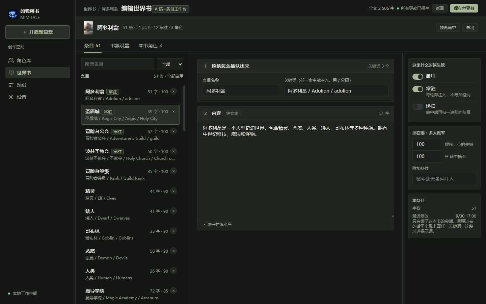
条目：三栏 —— 条目列表 336 / 正文 640 / 本条属性 248
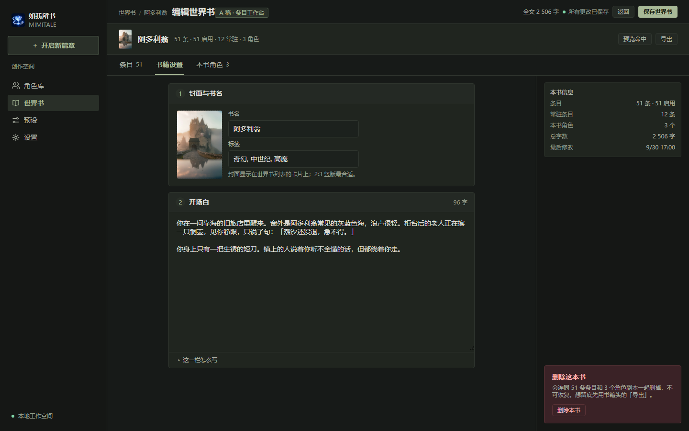
书籍设置：两栏 —— 稿纸 + 本书信息与危险区
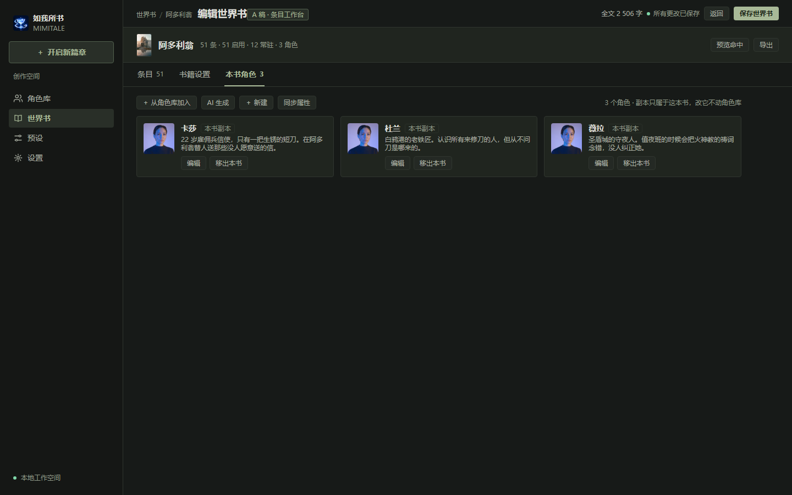
本书角色：卡片网格（有内容的样子）
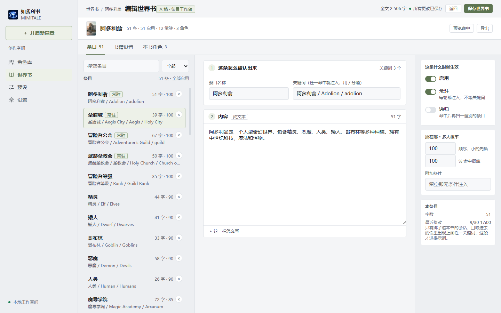
白天主题
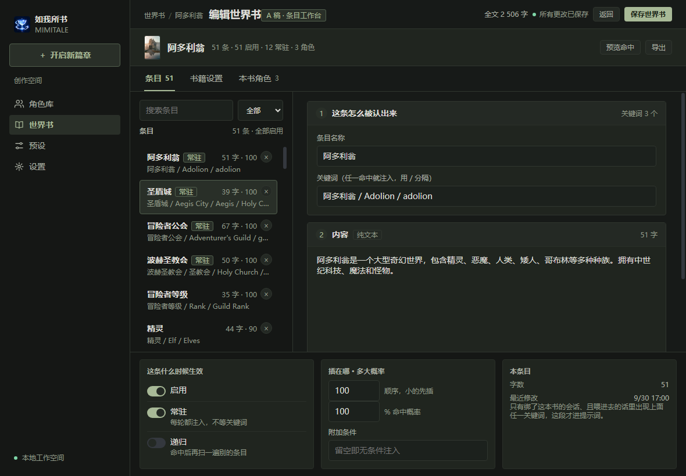
窄屏 1180×820：属性栏折到底部横排，正文拿回 42 字/行
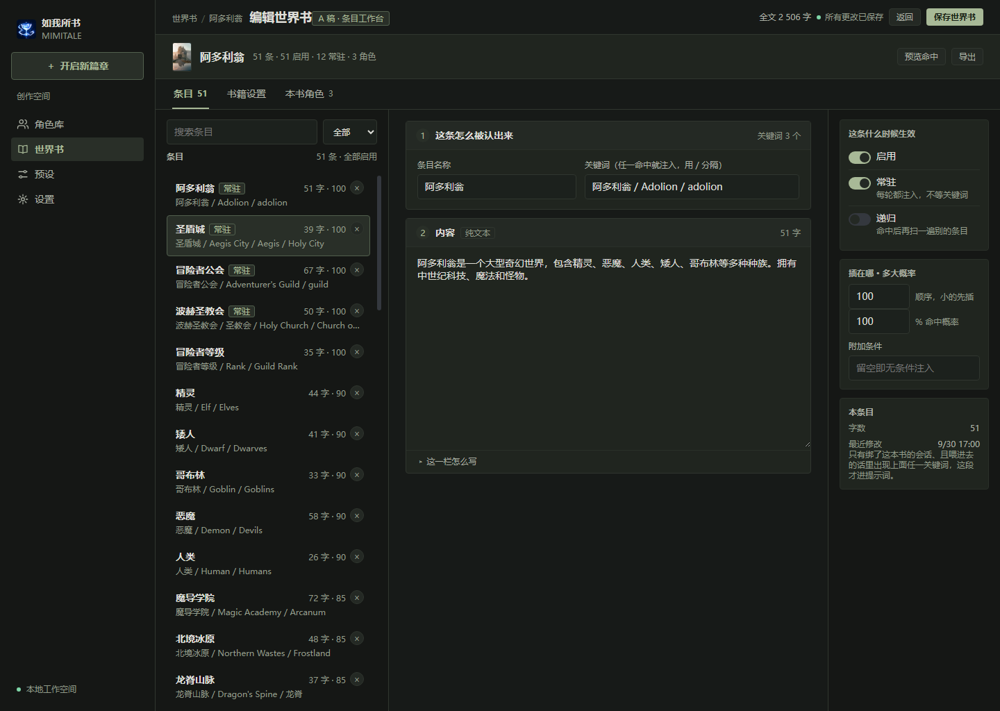
高屏 1440×1024
B 稿 · 书籍工作台 1440×900 · 夜间
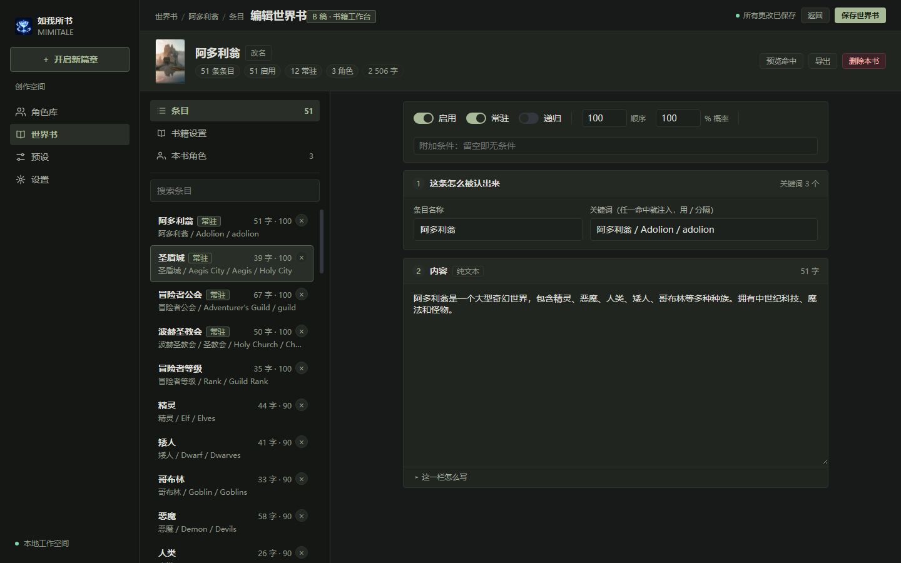
条目：书籍头 96 + 左目录 304 + 正文；属性收成正文上方一条横条
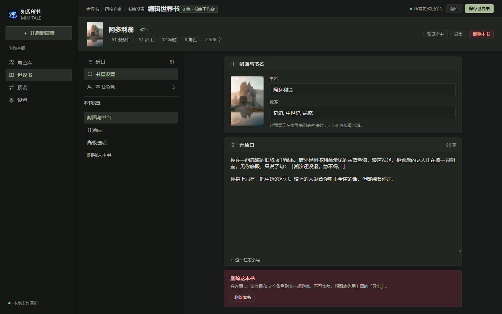
书籍设置：左栏锚点 + 稿纸；危险区在内容流里
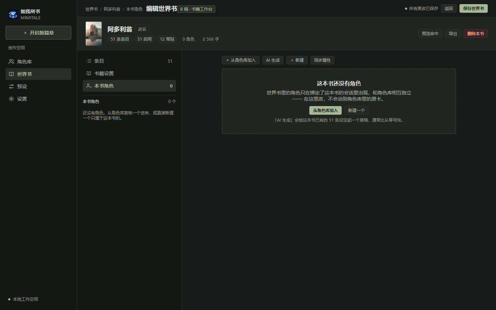
本书角色：空态（引导卡）
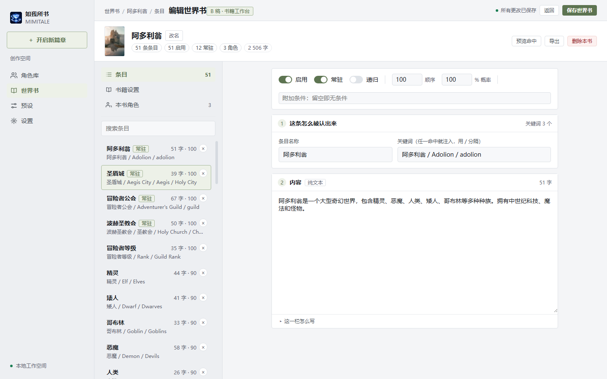
白天主题
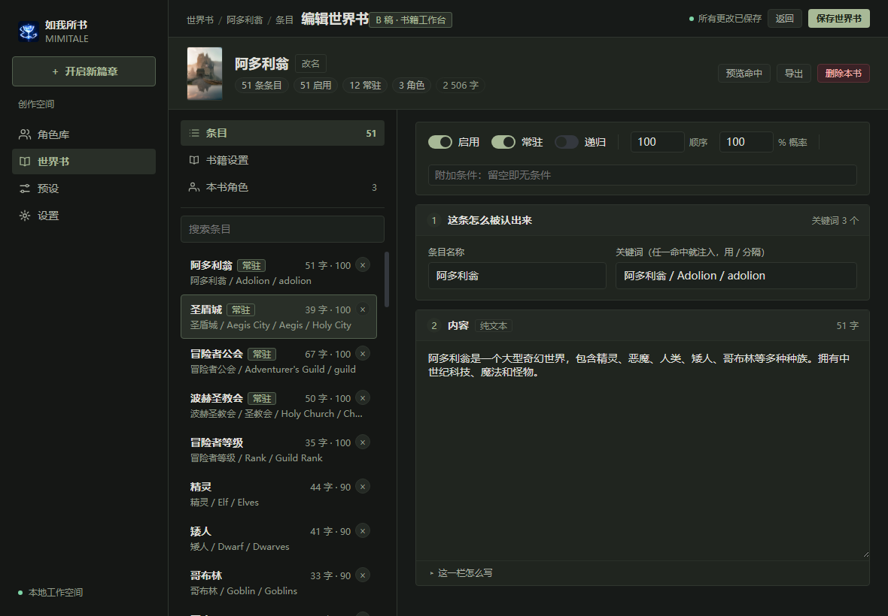
窄屏 1180×820